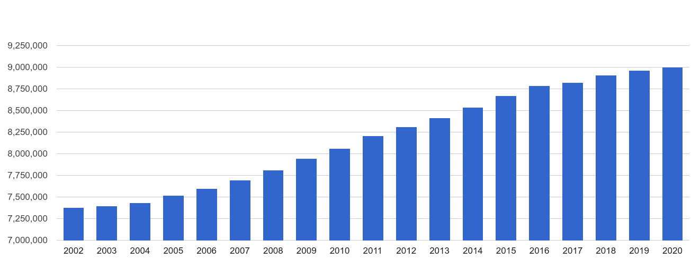
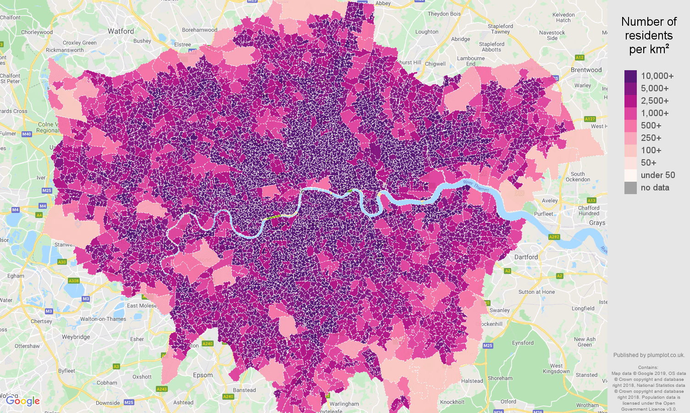
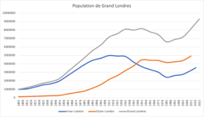

Démographie
Londres est la ville la plus peuplée d’Europe de l’Ouest. Combien d’habitants compte-t-elle ?
Population
Le Grand Londres comptait 8 615 000 habitants en 2011. L’aire urbaine de Londres compte près de 10 millions d’habitants, et l’aire métropolitaine, sa zone d’influence directe, environ 15 millions.

D’après Eurostat, Londres est la ville la plus peuplée d’Europe de l’Ouest et la deuxième aire urbaine après Paris. Elle se classe aussi au quinzième rang des villes et des aires urbaines les plus peuplées du monde.

Évolution démographique
Londres comptait sans doute un peu plus de 50 000 habitants en 1500. Elle s’est rapidement développée aux XVIe et XVIIe siècles. Un peu avant 1700, elle dépasse les 500 000 habitants et devient la ville la plus peuplée d’Europe, devant Paris. Elle est alors environ vingt fois plus peuplée que Bristol, la deuxième ville d’Angleterre à l’époque.

Résidents nés à l’étranger
Selon l’Office for National Statistics, le nombre de Londoniens nés à l’étranger est passé de 1 630 000 en 1997 à 2 288 000 en 2006.

Cartes et graphiques

